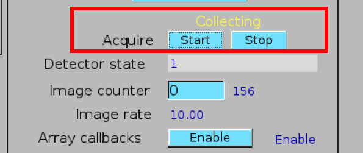

Troubleshooting
How do I start the collection ipython environment so I can collect some data?
Activate the XPD data acquisition environment:
In a terminal look to see if it is already activated. If it is, you should see
(collection)at the beginning of the line.(collection)xf28id1@xf28id1-ws2:~$
If you don’t see it, type
icollectionat the command prompt then check again.
Activate the XPD data analysis environment:
In a terminal look to see if it is already activated. If it is, you should see
(analysis-dev)at the beginning of the line.(analysis-dev)xf28id1@xf28id1-ws2:~$
If you don’t see it, type
ianalysisat the command prompt then check again.
Pro Tip to avoid overhead that slows down the data acquisition computer, it is
a good idea to run the analysis environment on a different computer. Normally (analysis)
will be run on the central computer at XPD, and (collection) on the right-hand computer.
How do I check if my beamtime is properly set up?
The instrument scientist (IS) should have set up your beamtime hardware and software for you. Let’s check if it is the case.
Type
bt.mdand hit return, you should see similar output as following:
>>> bt.md {'bt_experimenters': ['Tim', 'Liu'], 'bt_piLast': 'Billinge', 'bt_safN': '300564', 'bt_uid': 'fbb381c3', 'bt_wavelength': 0.1832}You should see the beamtime (
bt) metadata (md) that has been pre-stored by the IS, and it should contain things like the last name of the PI on the proposal and the SAF number for the beamtime. If not, please seek out the IS to get your session initialized.
Check that the wavelength has been set. Does the correct x-ray wavelength appear inside
bt_wavelengthfield, or does it sayNone. If the latter, you can still collect scans but automated data reduction may not work, so best to grab the IS again.Check that the Perkin Elmer detector is correctly set up.

Look at the Perkin Elmer screen on the CSS and make sure that
Acquiremode has been enabled. If Acquire mode is enabled, it should show system informationCollectingin yellow color. If it hasn’t been activated, please click ‘start’ button.
Type
glbl.area_detand return. It should return:In [5]: glbl.area_det Out[5]: PerkinElmerContinuous(prefix='XF:28IDC-ES:1{Det:PE1}', name='pe1', read_attrs=['tiff', 'stats1'], configuration_attrs=['images_per_set', 'number_of_sets'], monitor_attrs=[])
{kind=link}
There are other setups that you can do to make your experiment run smoothly. For example, by carrying out a calibration before you start collecting it greatly facilitates data reduction later. Please follow the workflow in the Code for Example Experiment or talk to the IS if you don’t know how to do this.
Why does my scan halt for no reason?
Sometimes you might find your scans halt for no reason, not even an error message.
That most likely come from confusion at machine level.
Don’t worry, just make sure there is only one XPD control running on this computer..
XPD control can be launched by double-clicking on shortcut in desktop:
{kind=link}
After launched, a window similar to this should pop out:
{kind=link}
Each XPD control means a control panel between XPD computer and experiment apparatuses, such as area detector or motor.
Therefore we should avoid having multiple XPD control running at the same time.
To make sure there is only one XPD control running, move to top left corner and click Activities.
Then you should see all currently active windows. Close duplicated control panels (if any) then it should work.
If scan still halts, please contact beamline scientist immediately for bug report.
Where did all my Sample and Scan objects go?????
You just spent hours typing in metadata and creating sample and scan objects, and now they have suddenly disappeared! This is a disaster!
As Douglas Adams taught us DON’T PANIC . This is actually
normal (or at least expected ) behavior in xpdAcq. Remember that
one of the design goals of the software project was to minimize
users’ typing. The design had to take into account that the
collection ipython environment is not so stable
(e.g., see Troubleshooting ) and we should expect periodic
restarts of it. How bad if we had to retype our metadata every
time? So every time you create an xpdAcq acquisition object,
the details are saved to a file on the local hard-drive. When
icollection is run, the main bt object (if it exists) is
automatically reloaded, but not the other acquisition objects.
But don’t worry, they are all safe and sound.